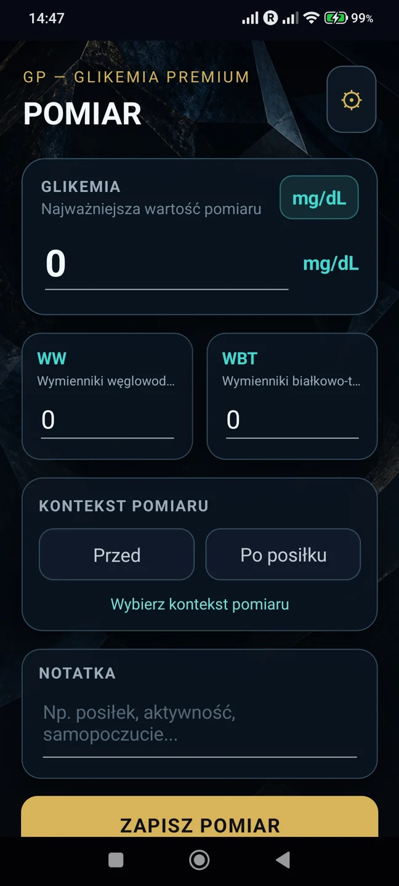

Dostępny APK
Glikemia Premium
Twój dziennik. Twoje dane.
Zapisuj pomiary, przeglądaj historię i przygotuj raport PDF. Dane dziennika pozostają lokalnie na Twoim telefonie.
- AndroidAplikacja mobilna
- OfflineDane na urządzeniu
- PDFHistoria i wykresy
Co oznacza licznik?
Liczba zakończonych pełnych pobrań APK. Wznowienia/Range i wykrywalny prefetch nie są naliczane; to nie jest liczba unikalnych użytkowników ani instalacji.

IDEA / ZASTOSOWANIE
Od potrzeby do produktu.
Problem
Pomiary, kontekst posiłku i notatki potrzebują jednego uporządkowanego dziennika, który pozostaje dostępny na telefonie.
Dla kogo
- Osoby prowadzące własny dziennik glikemii
Rozwiązanie
Aplikacja .NET MAUI przechowuje pomiary na telefonie, porządkuje historię i tworzy raporty PDF. Nie wymaga własnego backendu danych zdrowotnych i nie zastępuje profesjonalnej porady medycznej.
Dlaczego powstał
Ułatwić codzienny zapis i przegląd własnych pomiarów oraz przygotowanie czytelnego zestawienia.
ARCHITEKTURA / POŁĄCZENIA
Technologia pod powierzchnią.
.NET MAUI na Androidzie, View Models + lokalne usługi SQLite Async Connection.
Glucose Measurement Policy normalizuje wejście; Measurement Record Persistence odpowiada za paginację i stabilną kolejność.
Skia Sharp generuje strony PDF; Local Notification obsługuje przypomnienia.
Dystrybucja portfolio i jej licznik/opinie to osobny backend strony, nie chmura danych pomiarowych.
FUNKCJE / POTWIERDZONY ZAKRES
Zaprojektowane do działania.
- Dodawanie, edycja i usuwanie pomiarów w lokalnej bazie SQLite, z walidacją wartości przed zapisem. [1]
- Kontekst pomiaru, WW/WBT i notatka są zapisywane razem z rekordem dziennika. [1]
- Historia ma stronicowanie po 50 rekordów, stabilną kolejność daty i ID oraz filtry dnia, tygodnia i miesiąca. [1]
- Wykres na ekranie historii przedstawia ostatnie pomiary z aktualnie załadowanego widoku. [1]
- Jednostki mg/dL i mmol/L są obsługiwane przy jednej kanonicznej postaci zapisu i jawnych regułach zaokrąglania. [1]
- Wielostronicowy raport PDF obejmuje całą historię i podsumowanie; generowanie działa poza wątkiem UI i blokuje równoległy eksport. [1]
- Interfejs oferuje siedem wariantów języka: PL, EN, DE, ES, IT, UK i RU. [1]
- Lokalne przypomnienie dwie godziny po pomiarze przed posiłkiem, po obsłużeniu uprawnienia do powiadomień. [1]
- Dane dziennika są przechowywane lokalnie; aplikacja nie dostarcza wbudowanej historii pomiarów użytkownika. [1]
Wyniki i granice weryfikacji
- Kod potwierdza lokalne CRUD, filtrowanie, wykres, jednostki i PDF.
- Dokument QA z 09.09.2026 opisuje 62 testy PASS; jest to wynik historyczny.
- Aktualny audyt statyczny potwierdził zgodność istniejącego APK z plikiem dystrybucyjnym, bez przebudowy i instalacji.
PRAWDZIWE EKRANY / BEZ MAKIET
Zajrzyj do środka.


STAN PRODUKTU
Produkt, platformy, dostępność.
Produkt
- Zakres funkcjonalny
- Dziennik glikemii Android
- Dystrybucja
- Istnieje APK 1.0. Lokalna kopia i źródłowy plik mają teraz identyczne 80 235 954 bajty i SHA-256; publikacji Play ani nowej instalacji nie zweryfikowano.
- Produkcja
- Brak backendu danych zdrowotnych. Istnieje osobna strona dystrybucyjna; jej bieżącej produkcji i liczników nie odczytywano. Formalny mobile Release Gate według dokumentacji pozostaje NOT PASSED.
Android
- Implementacja
- IMPLEMENTED — źródłowy target net 10.0-android, min Sdk 24, wersja 1.0 (1).
- Weryfikacja
- Historyczne 62 testy automatyczne i starsza fizyczna regresja; finalne manualne bramki Release i Play nie zostały zamknięte.
- Dystrybucja
- Istniejący podpisany APK 1.0 arm 64 i identyczna kopia downloads/glikemia-premium.apk.
- Otwarte kwestie
- Brak potwierdzonej publikacji Google Play. Aktualne manualne QA zmienionego UI, backup/transfer i Play install pozostają osobnymi odbiorami. Wolniejszy historyczny Debug cold start nie jest nowym pomiarem aktualnego Release.
WERYFIKACJA / DATY / ŚRODOWISKA
Dowody z kontekstem.
Każdy wynik dotyczy wskazanego zakresu i środowiska. Odczyt kodu potwierdza implementację; nie zastępuje uruchomienia produktu.
PASS · · Wynik historyczny
Automatyczna regresja; Debug/Release rebuild · Weryfikacja
62 PASS / 0 FAIL / 0 SKIP.
Środowisko: lokalny .NET/Android build na Linux
Rewizja:Raport opisuje working tree bazujące na5144a187; późniejsze commity domykają te źródła. Brak nowego uruchomienia dla aktualnegoHEAD.· ŹródłoFAIL · · Wynik historyczny
Fizyczna regresja ADB wcześniejszego Debug/legacy application Id · Pierwszy przebieg fizyczny
Pierwotnie 9 PASS / 1 FAIL. Późniejszy opis raportuje korektę i 10/10, bez nowego testu tego audytu.
Środowisko: fizyczny Android, starszy kandydat
Rewizja:historyczny artefakt z raportu, nie aktualnyAPK1.0· ŹródłoPASS · · Wynik historyczny
Fizyczna regresja ADB wcześniejszego Debug/legacy application Id · Późniejszy wynik opisany w raporcie
Raport opisuje 10/10 po poprawkach; nie jest to nowy odbiór aktualnego APK.
Środowisko: fizyczny Android, starszy kandydat
Rewizja:historyczny artefakt z raportu, nie aktualnyAPK1.0· ŹródłoNOT RUN · · Wynik historyczny
Odzyskany od właściciela historyczny stress z ok.10 k rekordów i 417-stronicowym PDF · Weryfikacja
operator-reported, nie nowy PASS
Środowisko: historyczne dane operatora; brak nowego surowego pomiaru
Rewizja:UNKNOWN in recovered evidence· ŹródłoNOT RUN · · Wynik historyczny
Przegląd bieżącego zakresu implementacji i granic dostępności.
Odczyt źródeł nie zastępuje uruchomienia aplikacji, testów urządzeń ani potwierdzenia produkcji.
Środowisko: Audyt źródeł i dostępnej dokumentacji.
Rewizja:304292713f9d9fbda88d37715ec22f08f5c91de2 + lokalne zmiany robocze· ŹródłoNOT RUN · · Przegląd bieżący
Aktualizacja inwentarza i granic gotowości
Nie uruchamiano produktu, nowego builda ani urządzenia. Zachowane wyniki mają własną datę i zakres.
Środowisko: Lokalny audyt kodu, dokumentacji i istniejących artefaktów
Rewizja:304292713f9d + lokalne zmiany konfiguracji· Źródło
WYZWANIA INŻYNIERYJNE
Decyzje, które robią różnicę.
Równe znaczniki czasu wymagają przewidywalnej kolejności historii.
- Wyzwanie
- Równe znaczniki czasu wymagają przewidywalnej kolejności historii.
- Analiza
- Kod historii sortuje pomiary według daty i identyfikatora.
- Przyczyna
- Sama data nie rozstrzyga kolejności rekordów zapisanych w tej samej chwili.
- Decyzja i poprawka
- Historia stosuje dodatkowy klucz identyfikatora i wspólne granice filtrów.
- Weryfikacja
- Odczyt kodu i historycznego raportu regresji; bez ponownego uruchomienia aplikacji.
- Wynik
- Implementacja zachowuje deterministyczny porządek historii. Nie jest to nowy odbiór urządzenia.
- Źródło
- glikemia-premium-case01
ROZWÓJ / OTWARTE KIERUNKI
Następne kroki.
Dziennik glikemii Android · Istniejący podpisany APK 1.0 jest plikiem publicznej dystrybucji. W audycie potwierdzono identyczne 80 235 954 B i SHA-256 kopii źródłowej oraz dystrybucyjnej; nie wykonywano nowego builda ani instalacji.
Do potwierdzenia lub ukończenia
- Finalna manualna akceptacja podpisanego Release na Androidzie.
- Formalny proces Google Play i powiązane listing, Data Safety oraz deklaracje aplikacji zdrowotnej.
- Nie przedstawiać raportowanych 417 stron i około 10 tys. rekordów jako nowego benchmarku.
- Nie publikować screenshotów historii lub PDF zawierających rzeczywiste pomiary.
Planowane kierunki
- Końcowy ręczny odbiór dostępności i lokalizacji obecnego kandydata
- Osobne przygotowanie publikacji i testów instalacji z Google Play
DYSTRYBUCJA / KONTAKT
Gotowy na Twoim urządzeniu.
Co oznacza licznik?
Liczba zakończonych pełnych pobrań APK. Wznowienia/Range i wykrywalny prefetch nie są naliczane; to nie jest liczba unikalnych użytkowników ani instalacji.
Suma SHA-256 i szczegóły pliku
APK podpisany cyfrowo i dystrybuowany bezpośrednio przez ProgressKit.
- Wersja
- 1.0 (1)
- Rozmiar
- 80,235,954 bajtów
- Android
- 7.0 lub nowszy · minSdk 24
SHA-256 pliku APK
137c6e4bde496346d186e83d7a34b085aded2b8dc4280ab7e1053c44e1c5684bOtwórz tę stronę na telefonie.
Zeskanuj aparatem telefonu z Androidem. Kod prowadzi wyłącznie do progresskit.pl.
Android · Bezpłatnie · Bez konta · Bez reklam
Aplikacja jest cyfrowym dziennikiem glikemii i nie zastępuje profesjonalnej porady medycznej.
Polityka prywatności aplikacji ↗
Etap i zakres dostępności
Istniejący podpisany APK 1.0 jest plikiem publicznej dystrybucji. W audycie potwierdzono identyczne 80 235 954 B i SHA-256 kopii źródłowej oraz dystrybucyjnej; nie wykonywano nowego builda ani instalacji.
Dziennik glikemii na Androida z lokalną historią, wykresem, filtrami i raportem PDF. Podpisany APK 1.0 jest dostępny bezpośrednio; publikacja sklepowa i końcowe bramki jakości pozostają odrębne.
Instalacja w kilku krokach
To bezpośrednia dystrybucja APK poza Google Play. Pobieraj aplikację tylko z progresskit.pl.
- Pobierz APK przyciskiem powyżej.
- Otwórz pobrany plik. Android może poprosić o zgodę na instalację z używanej przeglądarki.
- Jeśli pojawi się taka prośba, zezwól na instalację z tego źródła.
- Wróć do pobranego APK i wybierz instalację.
Android lub Play Protect może pokazać komunikat dotyczący instalacji spoza Google Play. Sprawdź źródło pliku i treść komunikatu. Nie wyłączaj globalnie Play Protect. Po instalacji możesz cofnąć zgodę dla przeglądarki.
Twoja opinia ma znaczenie
Glikemia Premium jest obecnie dostępna bezpłatnie bezpośrednio od ProgressKit. Przetestuj ją przez kilka dni, wróć i zostaw szczerą opinię.
Opinie użytkowników
Publikujemy autentyczne opinie po sprawdzeniu spamu i danych prywatnych. Ocena nie decyduje o publikacji.
Ładowanie opinii…
Aplikacja jest cyfrowym dziennikiem glikemii i nie zastępuje profesjonalnej porady medycznej.
Produkt zaprojektowany i rozwijany przez ProgressKit.
TRANSPARENTNOŚĆ
Podstawa prezentacji.
Zakres ustalono na podstawie kodu i materiałów wymienionych poniżej. Wyniki historycznych testów zachowują datę oraz zakres; nie oznaczają ponownego testu ani potwierdzenia produkcji.